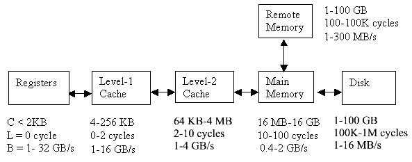

|
Tuning and Performance on Multi-Core Processors |
|
Tuning and Performance of Application Programs using Compiler optimization techniques,
Code restructuring techniques
on Multi-Core Processors is challenging. Understanding Programming Programming Paradigms
(MPI, OpenMP, Pthreads), effective use of right
Compiler Optimization flags and obtaining correct results for given application
is important. Enhance performance and scalability on multiple core processors for given
application with respect to increase in problem size require serious efforts. Several Optimization
techniques are discussed below.
|
|
Multi Core Processors, Hierarchical Memory Features, Cache Overview |
(a). Hierarchical Memory Features
|
|
The performance of a modern computer depends how fast the system can move data between processors and memories.
For the processor to work very fast, we need to feed a processor the required data and instructions
continuously. When the processors work at clock rate of 10 MHz, memory latencies of 10 nanoseconds
could be tolerated. However, the current microprocessors operate at 800 MHz.

Figure 1.1 Memory features of computing system
Furthermore, we studied in previous section that the super-scalar processor may execute multiple
instructions in each clock cycle. This imposes stringent requirements on effective memory latency
and bandwidth. The memory latencies have not kept up with processor speeds. Fastest available
DRAMs (Dynamic Random Access Memory) operate at about 50 ns latency. This reflects the major
mismatch in the rate at which data is required by the processor and the rate at which DRAMs can
supply the data. We discuss the role of hierarchical memory structures and memory banking to
reduce the effective latency and increase bandwidth.

Figure 1.2 Memory subsystem hierarchy features of computing system
The main memory includes the local memory in a node, and the global memory for machines with a
centralized shared memory, such as PVPs and SMPs. The memory subsystem hierarchy is shown
in the Figure 1.1 & Figure 1.2. In general, the program references a variable, which can physically be in number
of different locations, some of which are very close to the processor (fast access), and some of
which are distant from the processor (slow access). This is illustrated in Figure 1.2, which shows
how latency (that is memory access time) increases depending on whether the variable being referenced
is found in a local register, cache, main memory, or secondary storage (disk).
|
|
(b). Multi Core Processors
|
Software developers can no longer rely on increasing clock speeds alone to speed up single-threaded
applications; instead, to gain a competitive advantage, developers must learn how to properly design
their applications to run in a threaded environment. Multi-core architectures have a single processor
package that contains two or more processors execution cores, or computational engines,
and deliver-with appropriate software-fully for parallel execution of multiple threads.
A multi-core microprocessor ( or chip-level multiprocessor, CMP) is one that combines two or more
independent processors into a single package, often a single integrated circuit (IC). A dual-core
device contains two independent microprocessors and a quad-core device contains four microprocessors.
The semantics by which the terms multi-core and dual-core are defined, refer to some
sort of central processing unit (CPU), but are sometimes also applied to Digital signal processing (DSP)
and SoCs (System-on-a-chip). Additionally, some use these terms only to refer to multi-core microprocessors
that are manufactured on the same integrated circuit die. M Both the terms multi-core
and dual-core to reference microelectronic CPUs manufactured on the same integrated circuit, unless
otherwise noted. A multi-core microprocessor implements symmetric multiprocessing (SMP) in a single
physical package. A simple view of Core 2 Dual diagram is given in the Figure 1.3

Figure 1.3 Generic Dual core processor, with CPU-local Level 1 caches, and a shared, on-die Level 2 cache.
The typical multi-core processor implements multiple processors that share a single coherent cache at the
highest on-device cache level (e.g. L2 for the Intel Core 2.) The processors also share a single
interconnect system (usually a bus) to the rest of the system. Each core independently
implements optimizations such as super-scalar execution, pipelining, and hyper-threading .
A system with N cores is effective when it is presented with N or more threads concurrently.
|
|
(c). Cache Overview
|
Cache is a small amount of very fast expensive memory that acts as a proxy for main memory.
It is divided into a number of equal sizes slots known as lines. Each line contains
a handful of sequential main memory locations, generally four to eight integers or real numbers.
Whereas the data within a line comes from the same part of memory, neighboring lines contain data
that is far separated within your program or perhaps data from somebody else program. When you ask
for something from memory, the computer checks to see if the data is available within one of these cache
lines. If it is, the data is returned with a minimal delay. If it is not, then your program may be delayed
while a new line is fetched from main memory. Of course, if a new line is brought in, then another one has
to be thrown out. If you are lucky, it won't be the one containing the data that you are just about
to need. When every reference can be found in a cache, you say that you have a 100 % hit-rate. Generally,
a hit rate of 95 % or better is considered OK. Below it application performance drops off steeply.
The general idea of a cache is that when a piece of data is needed most, it is moved to a place where it can
be accessed quickly. The remaining data continues to reside in main memory where it can be accessed later.
Problems occur when the program accesses data that is not already in the cache (a so called cache miss). As
we described earlier, the data element must be retrieved by grabbing data (a cache lines worth) from secondary
cache or main memory. Further, this data will overwrite any data in the existing cache line. If the entry
that was just replaced is subsequently needed, the data needs to be retrieved, resulting in lots of wasted
overheads, etc. In cases like these, (the technical term is thrashing) performance is degraded and cache
may seem like more of a headache, than a plus.
Another way to optimize the use of cache is to keep in mind that once a piece of data is in the cache,
it should be re-used as much as possible. Looping through multidimensional arrays provide excellent
opportunities for cache reuse. For each layer, three parameters such as capacity, latency, and bandwidth
play a vital role for performance. The faster and smaller devices are closer to the processors.
The devices closer to the processor or registers, which are in fact a part of the processor chip.
Normally, no extra cycles are needed to fetch a word from a register to a functional unit (e.g. ALU).
But the registers have limited capacity.
On most of the modern computers, the latency to fetch a word from a register to functional unit may
vary 2-4 ns. The level-1 cache is usually on the processor chip, while the level-2 cache is off the
chip. The remote memory refers to all local memories of other nodes. Cache memories are faster static
RAM devices that are used as a buffer between the processor and the DRAM. These are much more expensive
than DRAM and have a significantly higher power consumption. Because of these reasons, the size of cache
memories is typically much smaller than the available DRAM.
There are various approaches in current use that attempt to ensure, based on statistical behavior
of program execution or on compiler analysis of the memory reference patterns, that when a variable
is actually referenced by the processor it will be close to the processor as possible. This means
moving the data, before it is referenced, so that it will be in the fastest part of memory (register
or cache) when it is referenced.
Cache memories work on the principles of spatial and temporal locality of data reference by typical
programs. In most programs, if a data word is accessed in the memory, it is likely that the words in
the neighborhood will also be accessed. This property is referred to as the spatial locality of data
reference. In some programs, it is also possible that words are repeatedly accessed in windows of time.
We refer to this locality as the temporal locality of data access. This is sometimes also called reuse
the locality of the program. Sometimes, if the processor attempts to access data from the cache, which
is not available in the cache, then a cache miss occurs. If the data is not available in the cache
(a cache miss occurs), the data is fetched from the DRAM into that cache. However, instead of fetching
a single word of data corresponding to the requested data item, a whole block of contiguous data is
transferred from the DRAM to the cache. This block of data is also referred to as a cache line. Due
to spatial locality properties, subsequently accessed data locations are likely to have been fetched
into the cache. The effective cache, subsequent accesses to these data items can also be serviced
fast and these data items will then be waiting in fast memory ready for use when required. Many other
factors influence cache performance. First, the cache size is critical for controlling cache misses.
The cache-line size has an impact on the miss-ratios and the time access memory.
Caches are not only good for data, which is being read, they are good for write too. In a simple uni-processor
system, data written into cache generally stays in the cache until the cache line replaced, at which point
it is written out into main memory.
All modern virtual memory machines have special cache called a translation lookaside buffer or TLB for
virtual physical memory address translation. The two inputs to the TLB are an integer that identifies
the program making the memory request and the virtual page requested. TLB lookups occur in parallel
with instruction execution, so if the address data is in the TLB, memory references will proceed quickly.
Caches come in several flavors: direct mapped, set-associate, and fully associate. The process of
pairing memory locations with cache locations is called mapping. Direct mapping is the simplest
algorithm for deciding how memory maps onto the cache. At the other extreme from a direct mapped cache
is a fully associative cache, where any memory location can be mapped into any cache line, regardless
of memory address. Set associative caches are generally come in two and four way designs.
On multi-processors (SMPs) written data must be returned to main memory so the rest of the processors
can see it, or all other processors must be made aware of local cache activity. Perhaps they need to
be told to invalidate old lines containing the previous value of the written variable so that they
don't accidentally use static data. This is known as coherency between the different caches.
The problem can become very complex in a multi-processor system.
Three approaches to solving the memory latency problem are latency avoidance, latency reduction, and
latency hiding are been suggested in the past. Latency avoidance is a technique that tries to organize
user applications at architectural, compiler, or application levels to achieve data/program locality.
The purpose is to avoid the long latency in remote data or program access. This is possible only when
applications exhibit either temporal locality or spatial locality. These techniques fall into the
following categories such as architectural support, user supports, and software supports.

|
|
(d). Pre-fetching and multithreading
|
Pre-fetching and multi-threading are techniques for Hiding Memory Latency. If it is possible to
anticipate the need for a data item well in advance, a request can be issued for the data with the hope
that the data will have arrived when it is actually needed and at the same time, the processor work on
other tasks that can be performed in parallel. This use of concurrency to hide latency is the key
issue to perfecting. Perfecting is an effective tool to hide memory latency in serial computing and
communication latency in parallel computers.
Given multiple threads of control, when a thread makes a memory access, it can be swapped out and the
threads can be executed. If the memory access is completed before control returns to the thread, the
latency of the access has been effectively hidden. In an extreme case, one can visualize uniprocessors
with hundreds of threads that are switched at each cycle. If there is adequate bandwidth to memory,
it is conceivable that the entire latency can be hidden. This technique is able to hide latency more
effectively than software perfecting. This is because it is often impossible to determine data access
patterns prior because of their complexity. Multi-threading may yield better performance than software
pre-fetching, it has considerable overheads in terms of hardware costs and programmer effort.
From the above, it can be concluded that the memory system design is very important from parallel
processing point of view. The critical issues in parallel processing are single processor performance.
Single processor performance depends on spatial locality and temporal locality of data reference
and it is critical to performance as well as parallel processing efficiency. While optimizing interprocessor
communication is important for parallel programming, single processor performance should not be neglected.
Since the most of the common parallel programming paradigm in scientific numerical computation is either
SPMD (Single Program Multiple Data) or Non-SPMD model. In both the paradigms, either each processor
is essentially executing the same program with the different data or required amount of computation
on each worker. Therefore, if one optimizes the performance of single processor program, there will
be a tremendous multiplicative effect on overall performance of the parallel code. Consequently single
PE performance is an important issue in serial and parallel code development.

|
|
| |
|